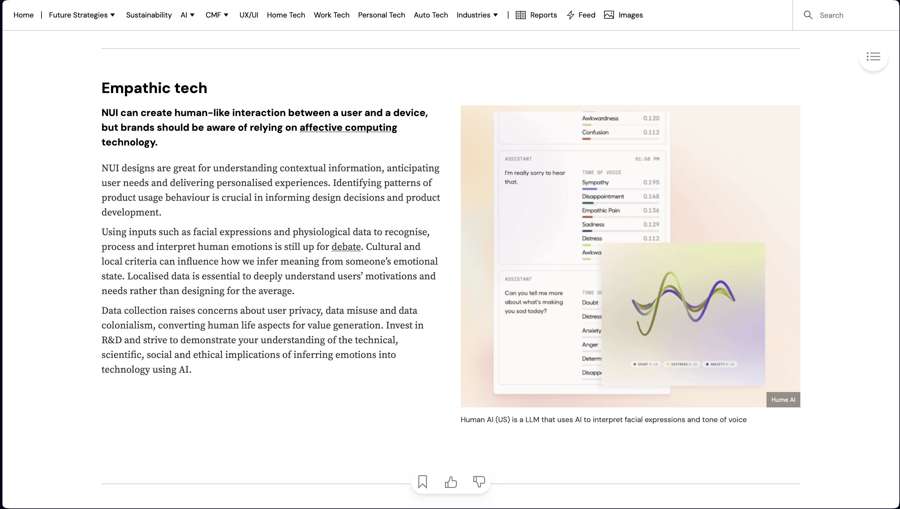
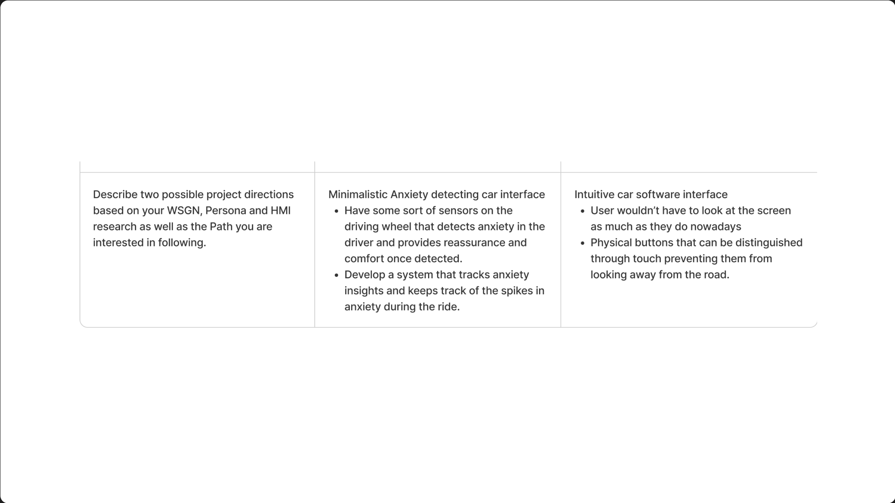

Module 1 Activity Research
Weekly Activity Template
Natalia Gómez Salas
Project 1
Module 1
Throughout these past weeks, I have been learning more about Arduino, Protopie, and TouchDesigner in order to choose a final path between Design and Art based on some of the trends I investigated. Conducted research on the trending personas and get a clear picture of what I was looking to solve for the target audience. I put a lot of thought into some possible solutions and the possibility of working collaboratively or individually. This process will be helpful in the development of project two, where I will use all my research and new knowledge of softwares to develop a product that will successfully meet the needs and wants of the audience.
Activity 1

Activity 2

Activity 3


Research Activity
WGSN Consumer Trend Research
In order to get some sort of starting point, I looked for some of the trends in WSNG website and came across multiple categories. In the end, I selected 2 of the ones that interested me the most and would be a good concept for project 2. I was interested in using technology to cope with anxiety or negative emotions, and ...

WGSN Personas Research
To understand better who the target audience is and what the ideal design or final product would have to solve and provide, I looked into the 2027 Personas in WSNG. I came across 2 groups of people which I thought would be the ideal target persona for the trends I was looking into. The Energisers who seek comfort in technology while still keeping, wether is community or reassurance. The other persona I focused on is the conventionalist who seek community and want more IRL connections rather than online, they want a balance between the real world and the digital world.

HMI Research
Once I had researched more into the trends, I was able to identify some of the problem spaces and think of ways to solve them by coming up with MHW statements. I based all my prompts on problems that already have insights and made sure I wrote them in a way that there could be multiple solutions/ approaches. This stage was important because I could start ideating the possible approaches to a problem and later develop a proper solution.
Project Path
During the final path, I went with the Design path rather than art, I believed the categories I was looking into were more into design based solutions rather than artistic. The idea that stood out the most was the anxiety while driving which would Ideally be collaborative (with Jane). This was based on the research on the website and the personas. We will still have to conduct more in-depth research on how anxiety affects driver, what are the possible triggers, and already existing solutions.

Project 1 Concept
Project 1 Concept
Our concept is based on driving anxiety, which is a common issue faced by many drivers and doesn't have a proper solution in the market yet. The idea is to use sensors to detect anxiety on the driver through the wheel, the sensors will be all around the wheel. Once anxiety is detected, there will be some sort of interface that will help the driver calm down, maybe auto pilot or some sensory assistance.
Powered by w3.css